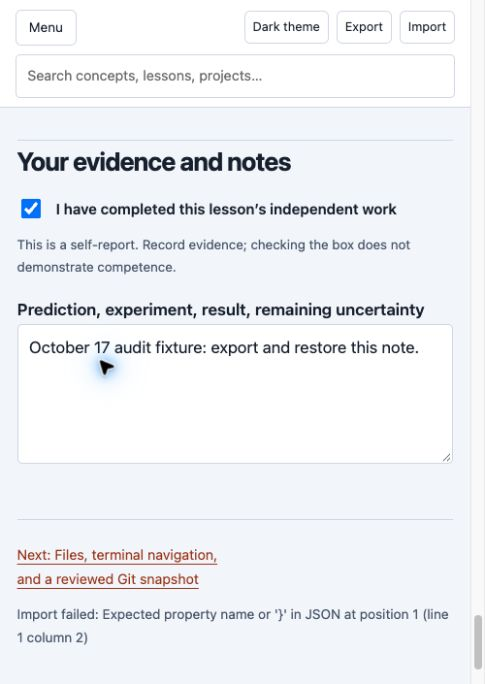

Verification after the runtime update
As of October 17, 2026, Rust 1.99.1, Node 26.12.0, cargo-fuzz 0.13.2 and nightly-2026-10-17 resolve and execute successfully. The previously blocked parser and optional Svelte checks now have durable passing logs. No global tools or settings were changed during this continuation.
Completed checks
- The parser completed 10,000 instrumented fuzz inputs without a reported finding. The deliberately false UTF-8 oracle failed with its expected assertion panic; a nonzero setup error was not accepted as success.
- All nine Svelte Node tests passed; svelte-check reported zero errors and warnings; Vite completed its production build.
- The official Svelte MCP autofixer reported no issues or suggestions. It inspected the unchanged component, whose source hash is recorded.
- The npm advisory scan reported zero known vulnerabilities. This is a dated database observation, not a security proof.
- All eight Rust/Vite HTTP acceptance groups passed across 52 requests: exact integers, permissions, read-only proxy behavior, admission bounds, timeouts and recovery. The harness stopped only its owned test processes.
Initial attempts to access npm and bind loopback ports were blocked by the sandbox. Both passed after the approved retries. Those initial logs remain intact. The earlier 218 native tests, 37 checkpoint builds, four database tests, seven Miri tests and strict Clippy records are retained; unchanged Rust source was not needlessly rebuilt.
| Check | Result | Evidence |
|---|---|---|
| rust-version | Passed | oct17-resumed-rust-version.log |
| node-version | Passed | oct17-resumed-node-version.log |
| fuzz-version | Passed | oct17-resumed-fuzz-version.log |
| nightly-version | Passed | oct17-resumed-nightly-version.log |
| fuzz | Passed | oct17-resumed-fuzz.log |
| svelte-tests | Passed | oct17-resumed-svelte-tests.log |
| svelte-check | Passed | oct17-resumed-svelte-check.log |
| svelte-build | Passed | oct17-resumed-svelte-build.log |
| svelte-audit | Passed | oct17-resumed-svelte-audit-retry.json |
| svelte-http | Passed | oct17-resumed-svelte-http.json |
| svelte-autofixer | Passed | oct17-resumed-svelte-autofixer.json |
| fuzz-bad-oracle | Passed (expected assertion failure) | oct17-resumed-fuzz-bad-oracle.json |
Managed WASM build completed
After the owner installed wasm-bindgen-cli 0.2.129, the course selected that exact version through mise and successfully rebuilt operations-console with its locked dependency graph. Web binding generation, generated JavaScript syntax and WASM binary validation passed. The current record includes commands, tool versions, logs, source hashes and all four generated artifact hashes. No machine-wide settings were changed by the agent. The separate native Chrome progress-file import check is recorded below.
Remaining scope limits
- Independent acceptance: Author review and executable checks do not establish independent acceptance or learner competence.
The latest supported TypeScript selection remains 6.0.3 because svelte-check 4.7.7 excludes TypeScript 7 in its published peer range. The publisher ledger and official documentation snapshots continue to support the version and idiom review.
Machine-readable results · Full October 17 audit · Completion manifest
Native Chrome file import completed
On October 17 the normal Chrome file picker restored the exported note and completion flag. Both persisted after reload. Unsupported versions, invalid completion values and malformed JSON were rejected; the original note and completion flag remained intact. No browser permission or security setting was changed. Earlier extension API failures did not establish a problem with the user configuration. Exact observations and fixture hashes.
